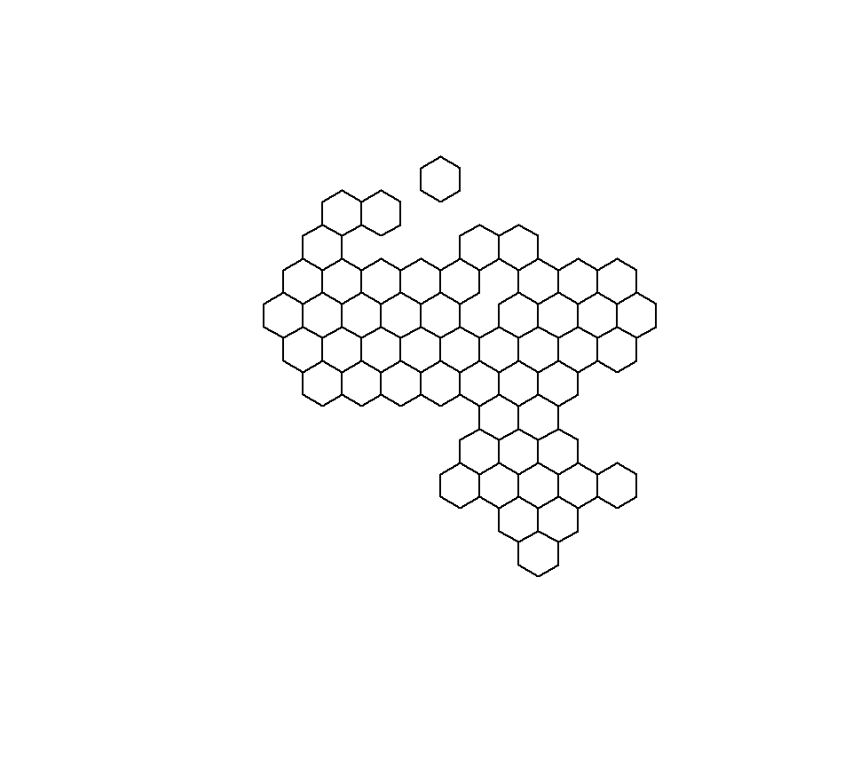
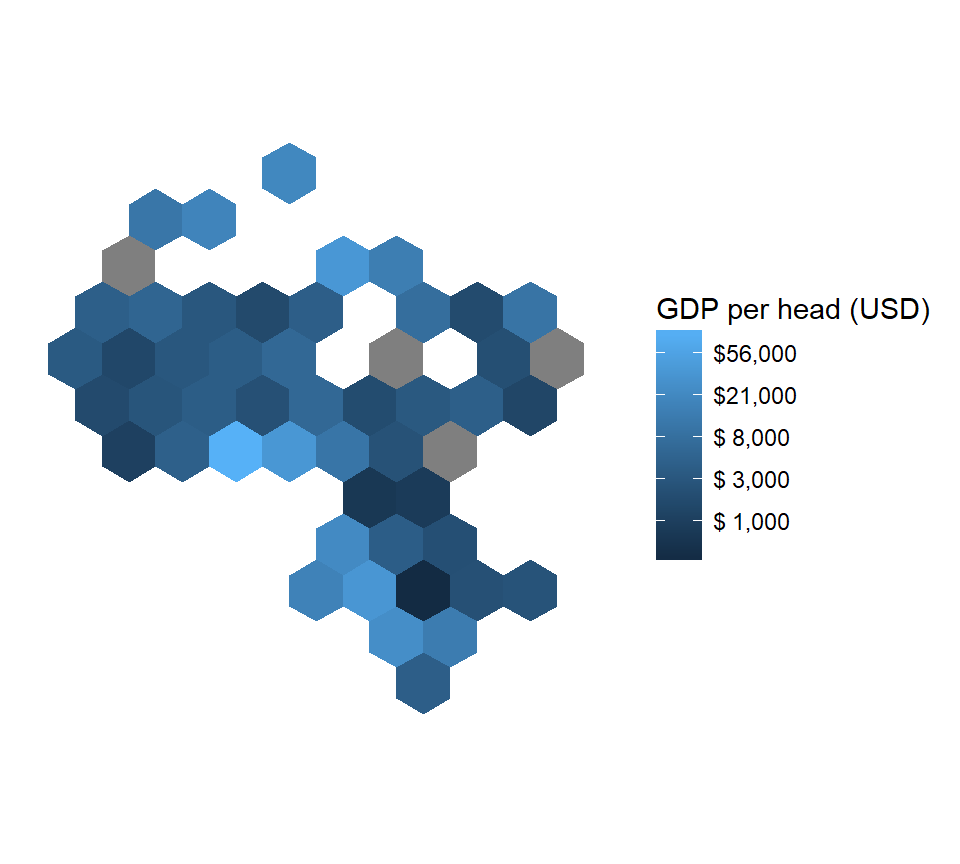

# Load required packages
require(makeTilegram)
require(rworldmap)
# Load simple map (without islands) from the `rworldmap` package
data("countriesCoarseLessIslands")
# Subset for Africa and remove NAs in the regions
afr <- countriesCoarseLessIslands[which(!is.na(countriesCoarseLessIslands@data$REGION) &
countriesCoarseLessIslands@data$REGION=="Africa"),]
tileGram <- makeTilegram(afr) # Make a Tilegram
plot(tileGram)
The above code chunk shows how simple it is to plot a tilegram for the Africa region from the shapefile found in the rworldmap package.
Base R plotting is not very nice however, so the code chunk below shows how to plot in ggplot2.
require(ggplot2)
tileGram_f <- ggplot2::fortify(tileGram) # Convert SpatialPolygonsDataFrame to data.frame
tileGram_f <- plyr::join(tileGram_f, tileGram@data,by="id") # Join with original data
# Join with population and GDP data
df <- afr@data[,c("GEOUNIT", "POP_EST", "GDP_MD_EST")]
names(df)[1] <- "tile_region"
tileGram_f <- plyr::join(tileGram_f, df, by="tile_region")
tileGram_f$`GDP Per Capita` <- round((tileGram_f$GDP_MD_EST)/(tileGram_f$POP_EST/1000000),-1)
# Plot in `ggplot2`
ggplot(tileGram_f, aes(label = tile_region, label2=`GDP Per Capita`)) +
geom_polygon(aes(long, lat, group = group, fill=log(`GDP Per Capita`))) +coord_equal() +
theme(panel.background = element_blank(),
axis.title = element_blank(), axis.text = element_blank(), axis.ticks = element_blank()) +
scale_fill_continuous(name = "GDP per head (USD)",labels=function(x) paste0("$",format(round(exp(x)*2.555,-3),big.mark = ",",scientific = F)))
And finally, add interactivity with plotly.
require(plotly)
ggplotly(width = 500,height=500)